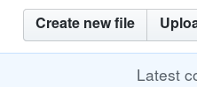

Registering in the OSG¶
The OSG keeps a registry containing active projects, virtual organizations (VOs), resources, and resource downtimes stored as as YAML files in the topology GitHub repository. This registry is used for accounting data, contact information, and resource availability, particularly if your site is part of the World LHC Computing Grid (WLCG).
Use this page to learn how to register information in the OSG.
Registration Requirements¶
The instructions in this document require the following:
- A GitHub account
- A working knowledge of GitHub collaboration
- OSG contact registration
Registering Contacts¶
The OSG keeps a database of contact information for resources, virtual organizations, and projects. Before submitting any registrations in the topology repository, you must have an entry in the contact database with an associated GitHub ID. To register as an OSG contact or add your GitHub ID to your pre-existing contact entry, search for your name in the contact database and choose one of the following:
- If you find your name and see an associated
GitHubaccount, you can start submitting registrations! - If you find your name but do not see an associated
GitHubaccount, send an email to help@opensciencegrid.org with your GitHub ID. -
If you cannot find your name, send an email to help@opensciencegrid.org with the following information:
- Full name
- Primary email address
- GitHub user name
- Description of your OSG affiliation, e.g. FermiGrid site administrator, senior scientist for the DUNE experiment, etc.
- Contact information of site, virtual organization, or project sponsor to prove your affiliation
Privacy
The OSG treats any email addresses and phone numbers as confidential data but does not make any guarantees of privacy.
Registering Resources¶
An OSG resource is a host that provides grid services, e.g. Compute Elements, storage endpoints, or perfSonar hosts. See the full list of services that should be registered in the OSG topology here.
OSG resources are stored under a hierarchy of facilities, sites, and resource groups, defined as follows:
| Level | Definition |
|---|---|
| Facility | The institution or company where your resource is located, e.g. University of Wisconsin |
| Site | Smaller than a facility; typically represents an academic department, research group, or a computing center, e.g. CHTC for the Center for High Throughput Computing. |
| Resource Group | A logical grouping of resources at a site. Production and testing resources should be placed into separate Resource Groups. |
| Resource | A host belonging to a resource group that provides grid services, e.g. Compute Elements, storage endpoints, or perfSonar hosts. A resource may provide more than one service. |
OSG resources are stored in the GitHub repository as YAML files under a directory structure that reflects the above
hierarchy, i.e. topology/<FACILITY>/<SITE>/<RESOURCE GROUP>.yaml from the
root of the topology repository.
Searching for resources¶
Whether you are registering a new resource or modifying an existing resource, start by searching for the FQDN of your host to avoid any duplicate registrations:
-
Open the topology repository in your browser.
-
Search the repository for the FQDN of your resource wrapped in double-quotes using the GitHub search bar (e.g.,
"glidein2.chtc.wisc.edu"):
- If the search doesn't return any results, skip to these instructions for registering a new resource.
- If the search returns a single YAML file, open the link to the YAML file and skip to these instructions for modifying an existing resources.
- If the search returns more than one YAML file, please contact us.
New resources¶
To register a new resource, follow the instructions below:
-
If you haven't already, verify that the FQDN of your resource is not already registered
-
Choose the names of your facility, site, and resource group, ensuring that the names match any pre-existing facilities, sites, or resource groups (including case and spaces). Follow the instructions below, replacing instances of
<FACILITY>,<SITE>, and<RESOURCE GROUP>with the corresponding names that you chose above:-
If your resource group already exists under your facility and site, open the following URL in your browser:
https://github.com/opensciencegrid/topology/edit/master/topology/<FACILITY>/<SITE>/<RESOURCE GROUP>.yaml
For example, to add a resource to the
CHTCresource group for theCHTCsite at theUniversity of Wisconsin, open the following URL:https://github.com/opensciencegrid/topology/edit/master/topology/University of Wisconsin/CHTC/CHTC.yaml
-
If any of your facility, site, or resource group do not exist, open the following URL in your browser:
https://github.com/opensciencegrid/topology/new/master?filename=topology/<FACILITY>/<SITE>/<RESOURCE GROUP>.yaml
For example, to create a
CHTC-Slurm-HPCresource group for the Center for High Throughput Computing (CHTC) at theUniversity of Wisconsin, open the following URL:https://github.com/opensciencegrid/topology/new/master?filename=topology/University of Wisconsin/CHTC/CHTC-Slurm-HPC.yaml
"You're editing a file in a project you don't have write access to."
If you see this message in the GitHub file editor, this is normal and it is because you do not have direct write access to the OSG copy of the topology data, which is why you are creating a pull request.
-
-
Make changes with the GitHub file editor using the resource group template as a guide. You may leave any
IDorGroupIDfields blank. When adding new entries, make sure that the formatting and indentation of your entry matches that of the template. -
Submit your changes as a pull request, providing a descriptive commit message. For example:
Adding a new compute element to the CHTC
Modifying existing resources¶
To modify an existing resource, follow these instructions:
-
Find the resource that you would like to modify by searching GitHub, and open the link to the YAML file.
-
Click the branch selector button next to the file path and select the
masterbranch.
-
Make changes with the GitHub file editor using the resource group template as a guide. You may leave any
IDorGroupIDfields blank. Make sure that the formatting and indentation of the modified entry does not change."You're editing a file in a project you don't have write access to."
If you see this message in the GitHub file editor, this is normal and it is because you do not have direct write access to the OSG copy of the topology data, which is why you are creating a pull request.
-
Submit your changes as a pull request, providing a descriptive commit message. For example:
Updating administrative contact information for CHTC-glidein2
Retiring resources¶
To retire an already registered resource, set Active: false. For example:
... Production: true Resources: GLOW: Active: false ... Services: CE: Description: Compute Element Details: hidden: false
If the Active attribute does not already exist within the resource definition, add it.
If your resource becomes available again, set Active: true.
Registering Resource Downtimes¶
Resource downtime is a finite period of time for which one or more of the grid services of a registered resource are unavailable.
Warning
If you expect your resource to be indefinitely unavailable, retire the resource instead of registering a downtime.
Downtimes are stored in YAML files alongside the resource group YAML files as described here.
For example, downtimes for resources in the CHTC-Slurm-HPC resource group of the CHTC site at the University of
Wisconsin can be found and registered in the following file, relative to the
root of the topology repository:
topology/University of Wisconsin/CHTC/CHTC-Slurm-HPC_downtime.yaml
Note
Do not put downtime updates in the same pull request as other topology updates.
Registering new downtime¶
To register a new downtime for a registered resource, you will use a webform to generate the contents of the downtime entry, copy it into the downtime file corresponding to your resource, and submit it as a GitHub pull request. Follow the instructions below:
-
Open the downtime generation webform in your browser.
-
Select your facility from the corresponding list.
-
Select the resource that will be down from the corresponding list.
-
Select all the services that will be down. To select multiple, use Control-Click on Windows and Linux, or Command-Click on macOS.
-
Fill the other fields with information about the downtime.
-
Click the
Generatebutton. -
If the information is valid, a block of text will be displayed in the box labeled
Generated YAML. Otherwise, check for error messages and fix your input. -
Follow the instructions shown below the generated block of text.
"You're editing a file in a project you don't have write access to."
If you see this message in the GitHub file editor, this is normal and it is because you do not have direct write access to the OSG copy of the topology data, which is why you are creating a pull request.
-
Wait for OSG staff to approve and merge your new downtime.
Modifying existing downtime¶
In case an already registered downtime is incorrect or need to be updated to reflect new information, you can modify existing downtime entries using the GitHub editor.
Failure
Changes to the ID or CreatedTime fields will be rejected.
To modify an existing downtime entry for a registered resource, manually make the changes in the matching downtime YAML file. Follow the instructions below:
-
Open the topology repository in your browser.
-
If you do not know the facility, site, and resource group of the resource the downtime entry refers to, search the repository for the FQDN of your resource wrapped in double-quotes using the GitHub search bar (e.g.,
"glidein2.chtc.wisc.edu"):- If the search returns a single YAML file, note the name of the facility, site, and resource group and continue to the next step.
- If the search doesn't return any results or returns more than one YAML file, please contact us.
-
Open the following URL in your browser using the facility, site, and resource group names to replace
<FACILITY>,<SITE>, and<RESOURCE GROUP>, respectively:https://github.com/opensciencegrid/topology/edit/master/topology/<FACILITY>/<SITE>/<RESOURCE GROUP>_downtime.yaml
"You're editing a file in a project you don't have write access to."
If you see this message in the GitHub file editor, this is normal and it is because you do not have direct write access to the OSG copy of the topology data, which is why you are creating a pull request.
-
Make changes with the GitHub file editor using the downtime template as a reference. Make sure that the formatting and indentation of the modified entry does not change.
-
Submit your changes as a pull request, providing a descriptive commit message. For example:
Move forward end date for CHTC-glidein2 regular maintenance
-
Wait for OSG staff to approve and merge your modified downtime.
Registering Virtual Organizations¶
Virtual Organizations (VOs) are sets of groups or individuals defined by some common cyber-infrastructure need. This can be a scientific experiment, a university campus or a distributed research effort. A VO represents all its members and their common needs in a grid environment. A VO also includes the group’s computing/storage resources and services. For more information about VOs, see this page.
Info
Before submitting a registration for a new VO, please contact us describing your organization's computing needs.
VO information is stored as YAML files in the virtual-organizations directory of the
topology repository.
To modify a VO's information or register a new VO, follow the instructions below:
-
Open the topology repository in your browser.
-
If you see your VO in the list, open the file and continue to the next step. If you do not see your VO in the list, click
Create new filebutton:
In the new file dialog, enter
<VO>.yaml, replacing<VO>with the name of your VO."You're editing a file in a project you don't have write access to."
If you see this message in the GitHub file editor, this is normal and it is because you do not have direct write access to the OSG copy of the topology data, which is why you are creating a pull request.
-
Make changes with the GitHub file editor using the VO template as a guide. You may leave any
IDfields blank. If you are modifying existing entries, make sure you do not change formatting or indentation of the modified entry. -
Submit your changes as a pull request, providing a descriptive commit message. For example:
Updating contact information for the GLOW VO
Registering Projects¶
Info
Before submitting a registration for a new project, please contact us describing your organization's computing needs.
Project information is stored as YAML files in the projects directory of the
topology repository.
To modify a VO's information or register a new VO, follow the instructions below:
-
Open the topology repository in your browser.
-
If you see your project in the list, open the file and continue to the next step. If you do not see your project in the list, click
Create new filebutton:In the new file dialog, enter
<PROJECT>.yaml, replacing<PROJECT>with the name of your project."You're editing a file in a project you don't have write access to."
If you see this message in the GitHub file editor, this is normal and it is because you do not have direct write access to the OSG copy of the topology data, which is why you are creating a pull request.
-
Make changes with the GitHub file editor using the project template as a guide. You may leave any
IDfields blank. If you are modifying existing entries, make sure you do not change formatting or indentation of the modified entry. -
Submit your changes as a pull request, providing a descriptive commit message. For example:
Updating contact information for the Mu2e project
Getting Help¶
To get assistance, please use the this page.